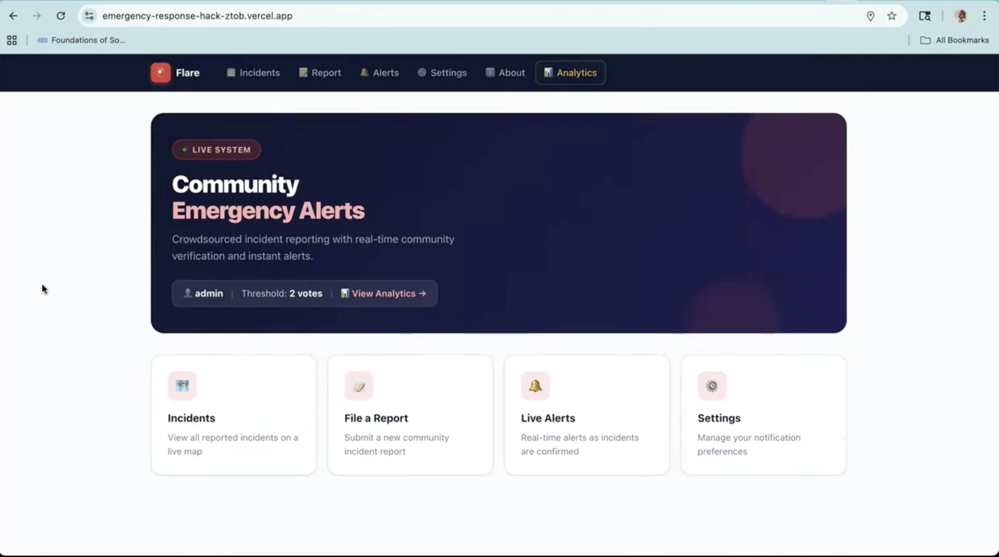

A real-time community emergency alert platform built in 24 hours — enabling decentralized incident reporting and community verification to deliver faster, more reliable safety alerts.

Event
Pearl Hacks 2026
UNC Chapel Hill
Award
2nd Place
TRIAD STEM Hack
Timeline
24 Hours
Hackathon sprint
Role
Full-Stack Development
Frontend · Backend · Real-Time
01 / Overview
Flare is a real-time community emergency alert platform built during Pearl Hacks 2026 — a 24-hour hackathon at UNC Chapel Hill. The project tackled a core gap in emergency communication: official alerts are slow because they require top-down verification. Flare flips this model by putting community members at the center.
Users report hazards — fires, floods, accidents — and the platform uses a decentralized credibility system driven by community upvotes to determine when a report becomes an official alert. Once a report crosses a verification threshold, nearby users are automatically notified in real time.
The project won 2nd Place for the TRIAD STEM Hack, demonstrating the potential for community-powered technology to improve situational awareness and emergency response at the local level.
View on DevpostCommunity members at the scene know about an emergency before any official source does. Flare captures that distributed knowledge and turns it into verified alerts — automatically.
24 hours. One shot. We had to identify a focused MVP, pick the right stack for real-time functionality, and ship something that actually worked by demo time.
02 / The Problem
Traditional emergency communication is top-down. Alerts only reach people after official verification — a process that takes time when time is the one thing people in danger don't have.
In fast-moving situations — a building fire, a flash flood, a traffic accident — the people closest to the event know first. But there's no easy way for that ground-level knowledge to surface into a warning system quickly. By the time an official alert goes out, critical minutes have passed.
Existing community apps like Citizen or Nextdoor surface reports, but they don't have a structured credibility mechanism that distinguishes a verified incident from a rumor — and they don't automatically escalate confirmed reports into safety alerts.
03 / Core Features
Four interlocking pieces that together form a complete emergency communication loop — from first report to verified alert to responder dashboard.
Users report incidents — fires, floods, accidents — with location and incident type in seconds. Reports enter the system immediately and are visible to nearby users.
Reports gain credibility through upvotes from other users in the area. Each upvote is a data point — the more confirmation, the higher the credibility score.
Once a report crosses a defined verification threshold, it automatically elevates to an official alert — triggering real-time notifications to nearby users.
Emergency responders and administrators get a live analytics view: total alerts raised, reports submitted, and users notified — all updating in real time.
Alerts are geofenced — only users near the incident receive notifications. Proximity determines relevance, keeping alerts actionable and noise-free.
The entire platform syncs live via Supabase's real-time subscriptions — no page refreshes, no polling. The UI reflects the current state of every incident instantly.
Live Alert — What a verified report looks like
Reported by 3 community members · First report 4 minutes ago · Chapel Hill, NC
04 / Technical Architecture
Every technology choice was made with one constraint in mind: this had to work — live, in a demo, in 24 hours. We chose tools we trusted and that played well together.
Server-side rendering, routing, and API routes for a fast, SEO-friendly frontend.
Component architecture and state management for a dynamic, real-time UI.
Python backend for high-performance API endpoints — incident creation, upvotes, and alert logic.
PostgreSQL database with real-time subscriptions — the backbone of live incident updates across all connected clients.
Data flow — Report to Alert
User
Location, type, description submitted via Next.js frontend
Backend
Validates report, writes to Supabase, returns confirmation
Database
Stores report, tracks upvotes, broadcasts changes in real time
Alert Logic
Credibility score crosses threshold → incident elevates to official alert
Notification
Nearby users receive live alert via Supabase real-time subscription
"Supabase's real-time subscriptions were the key bet. Instead of polling the database every few seconds, clients subscribe directly to changes in the incidents table — so the moment a report's credibility score updates or an alert is triggered, every connected client updates without any user action. That's what makes Flare feel live."
05 / Process
The 24-hour constraint is ruthless about scope. The first hour was spent answering one question: what is the smallest version of this that still makes the idea legible? We landed on the core loop: report → upvote → verify → alert. Everything else was a nice-to-have.
The platform only works if updates are live — a refresh-based system doesn't capture the urgency of emergency alerts. Supabase's real-time subscriptions were the deciding factor in the stack choice. It meant we could wire the database directly to the UI without building a separate WebSocket layer, which saved us hours.
The upvote threshold was the core algorithm. Too low, and false reports slip through. Too high, and legitimate emergencies get stuck in pending status. We tuned the threshold iteratively during the build — testing with simulated reports to find the right balance between speed and accuracy.
With FastAPI handling the backend and Next.js on the frontend, we split work and reunited at the API contract. Defining the request/response shapes early meant we could build in parallel without blocking each other — critical when time is the primary constraint.
The analytics dashboard for emergency responders came together in the final hours. Because Supabase was already broadcasting all data changes in real time, surfacing metrics — total alerts, reports submitted, users notified — was more about query design than new infrastructure. The hard work was already done.
06 / Reflection
Supabase real-time subscriptions over polling. It paid off — the live UI was the most compelling part of the demo and the reason the platform felt like a real product.
Spend more time on the credibility algorithm. The threshold we shipped worked, but a proper model accounting for user history and report location density would make Flare much more robust against false reports.
I can hold the full stack in my head at once — data model, API design, and UI state — and make decisions across all three layers. That's the skill I'm most proud of developing here.
Built in 24 hours at Pearl Hacks 2026. Flare demonstrated that community-powered technology can meaningfully improve emergency situational awareness — and that the right stack makes real-time feel effortless.
View on Devpost